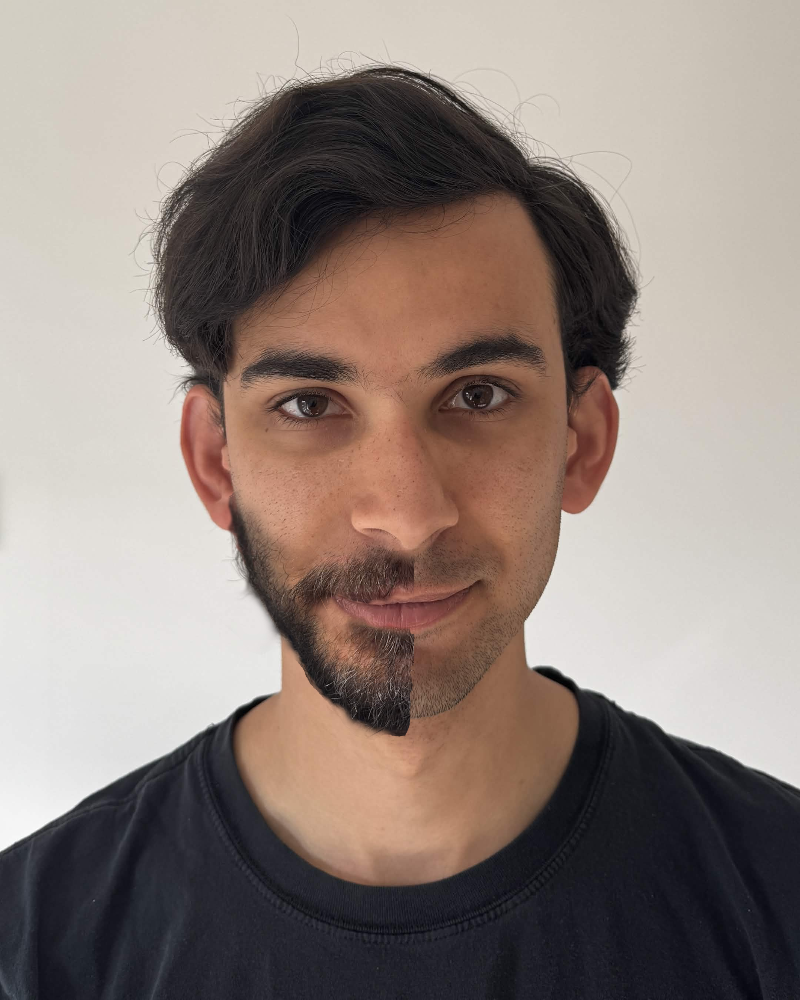

Movember 2026
This November, I'm raising money for the charity Movember. They do many things to support men's health and mental health such as:
- Providing resources for yourself, for a parent or a friend to help deal with issues such as depression or anxiety,
- Conducting studies into factors affecting the modern day perception and messaging around masculinity online,
- Funding training of mental health practitioners around the world.
The traditional way of fundraising for them is to grow a mustache, but I've already done that in October. What I'm doing this month is to ask each (remaining) week: into what shape do you want me to shave it??? Each week, there will be 4 options and you will VOTE with your money where £1 will correspond to 1 vote. At the end of the week, I'll shave according to the will of the crowds... This was the result of Week 1's vote for the twoface bristle!
The Options: Week 2 (!)
In week 2, the voting options are as follows:
- I shave off all but the half-stache. Half the size, double the power!
- In the spiritual successor to the fan-favourite critical strip, the political strip involves me shaving off my mustache and all hair to the right of it in the same horizontal band. Why political? Everything's political! That, and we're getting rid of the hair on the far right...
- In the piecewise jugular, I shave off everything apart from my neckbeard. It's the hairstyle of the everyman, after all it's a consequence of Baldzano-Barberstrass that every contiguous growth on my face can be approximated uniformly by piecewise jugular shaves...
- The yin and yang will involve me shaving off all but a circular disk of hair on my cheek and leaving all hair on my neck but a shorn circular disk. Channeling the Tao of Barbers, many people are saying that it's hard to find a more hircine hairstyle.
We may or may not have mock-ups incoming!
How to Vote
To vote, you need to send an email to iskander.mathews@atomicmail.io with:
- a clear option you're voting for,
- a screenshot of a receipt/the receipt showing me that you've paid some amount to my Movember page here.
Current Results
Soon, we're gonna have another ASCII graph of the current votes for next week's facial hair options...
The Options: Week 1
In week 1, the facial-hair options were as follows:
- I shave off all the hair in a vertical strip around 2-3cm left and right of the axis of symmetry of my face, leaving the sides of my mustache, beard and neckbeard still present in the classic hairstyle called the critical strip.
- I shave off all the hair on the left side of my face but not the other to get the well-known twoface bristle.
- On either side of my face, I shave off a square of hair that I try to get as neatly right-angled as possible to get the famous biquadrangular spectacular.
- I attempt to cleanly shave along three randomly positioned straight lines that pass along my face, following the oft-used hair configuration known as the stochastic fantastic.


Thank you to Owl Hsiao for quickly making these amazing mock-ups of how I'd look in the four cases!
End of Week 1
Here's a fun ASCII graph of the submissions at closing time:
Critical Strip : ▇▇▇▇▇▇▇▇▇▇▇▇▇▇▇▇▇▇▇▇▇▇▇▇▇▇▇▇▇▇▇▇▇▇▇▇ 46.00
Twoface Bristle : ▇▇▇▇▇▇▇▇▇▇▇▇▇▇▇▇▇▇▇▇▇▇▇▇▇▇▇▇▇▇▇▇▇▇▇▇▇▇▇▇ 50.00
Biquadrangular Spectacular: 0.00
Stochastic Fantastic : 0.00
There was a flurry of activity just before the end of the voting round where the Critical Strip and Twoface Bristle voters vied for power in the political sphere. But modern politics is brutal and tough, as the Critical Strippers will never forget... Big Twoface has won out! Soon this page will be updated with the physical results and a new vote!